Ba kỹ thuật.
Ba cách tạo hình.
Ví dụ mới được vẽ bằng Python, NumPy và Pillow theo đúng các module LineArt, Morph và Soft3D trong repo. Không dùng model sinh ảnh. Mở từng breakdown để xem layer hoặc các bước render.
Midnight Bakery
Một nét vàng duy nhất đi từ vỉa hè qua mặt tiền, mái hiên, cửa kính, ổ bánh và hơi nóng. Cửa kính hổ phách là điểm màu duy nhất.
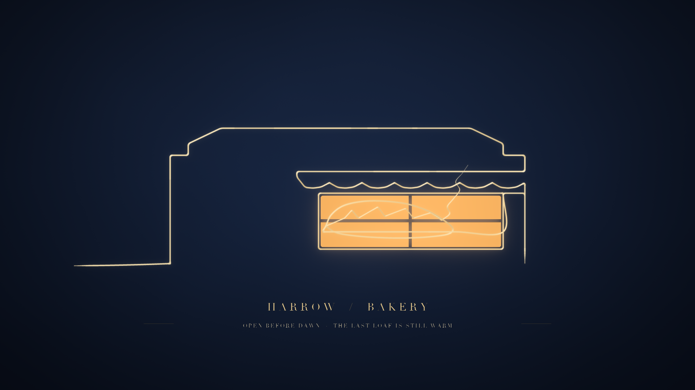
Layer xuất riêng
Đây là các lớp raster thật được lấy từ buffer của thư viện, không phải ảnh minh họa giả lập.
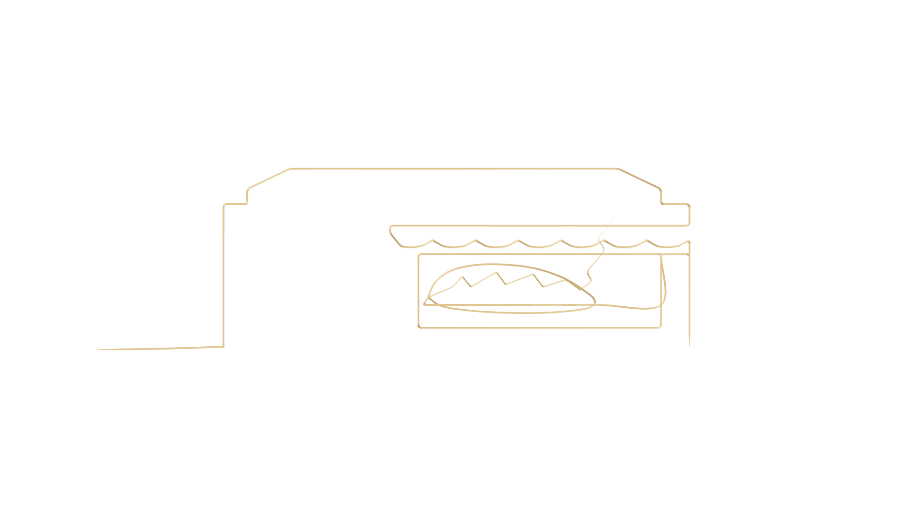
01 · Single pathNét kim loại + alpha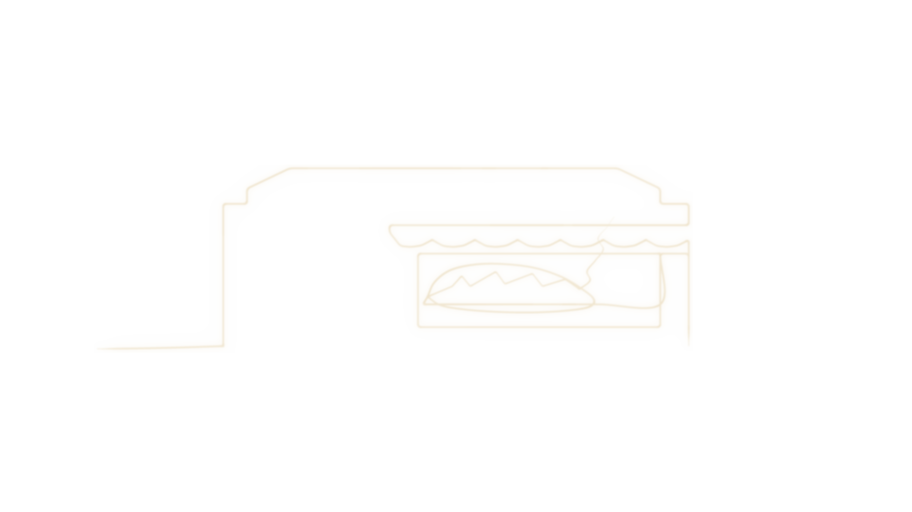
02 · Line glowQuầng sáng tách riêng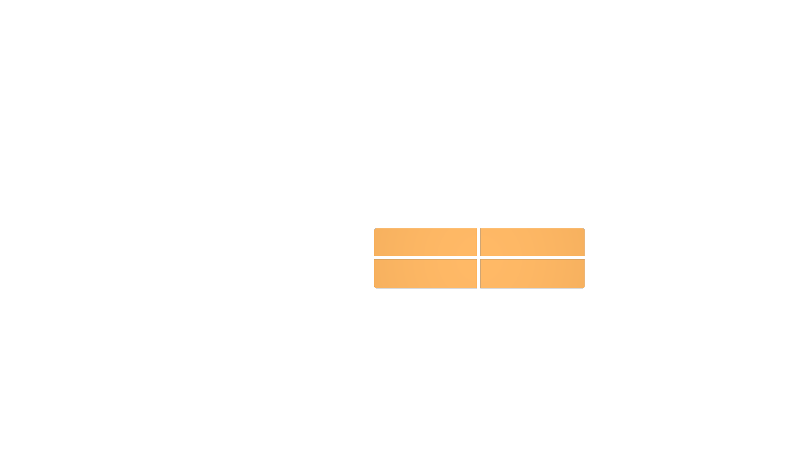
03 · Window accentMảng kính hổ phách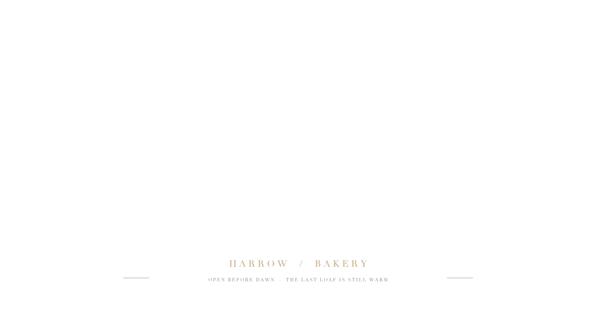
04 · TypographyChữ / hairline riêngStage vẽ
Các ảnh dưới đây là ảnh chụp cộng dồn theo tiến trình; đầu tiên là nền, sau đó path được hé lộ đến từng điểm mốc, rồi điểm màu và chữ.

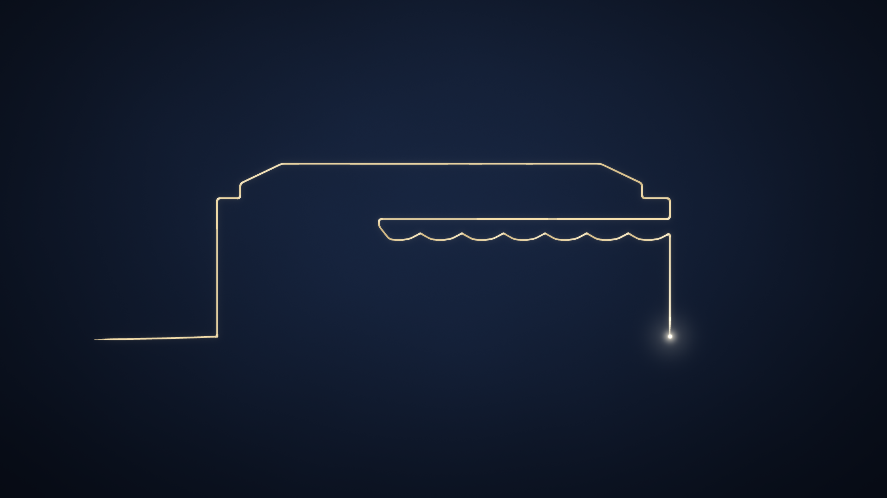
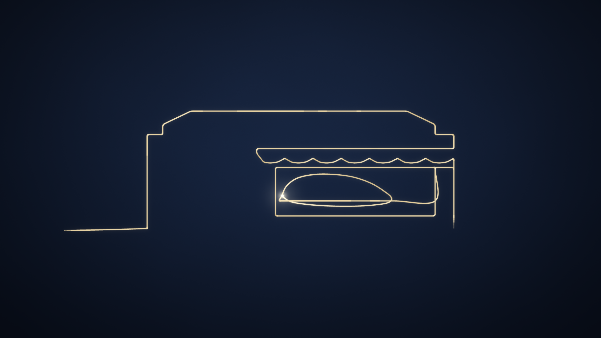
Dough becomes a loaf
Một contour khép kín, chuẩn hóa thành 256 điểm, rồi đổi hình bằng nội suy, căn chỉnh điểm đầu, easing, squash/stretch và onion-skin. Có poster giải thích và GIF chạy thật.
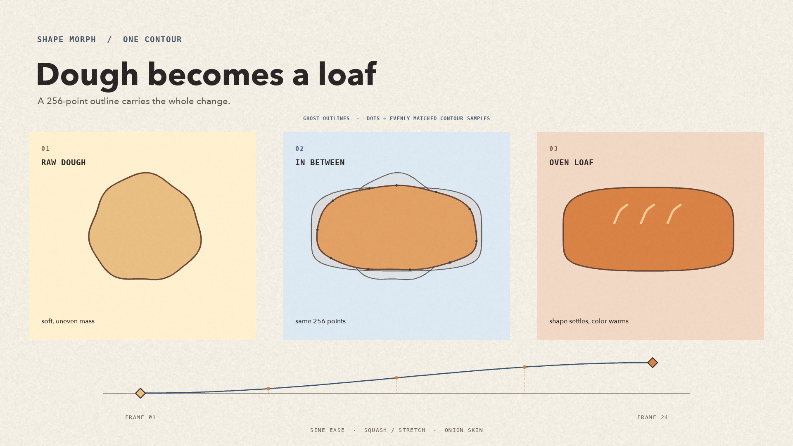
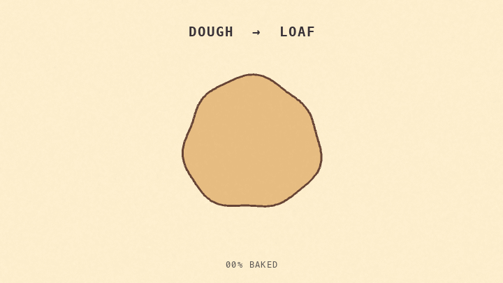
Contour keyframes — PNG alpha
Ba shape được xuất riêng để xem outline trước, giữa và sau. Thân hình của shape là một contour phẳng; đây không phải rig nhiều khớp.
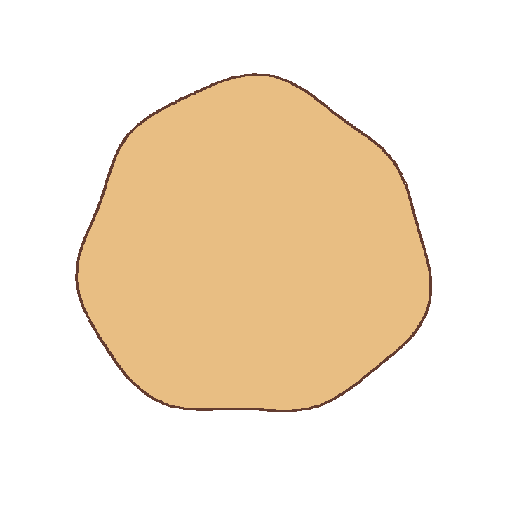
01 · Raw doughKeyframe A · transparent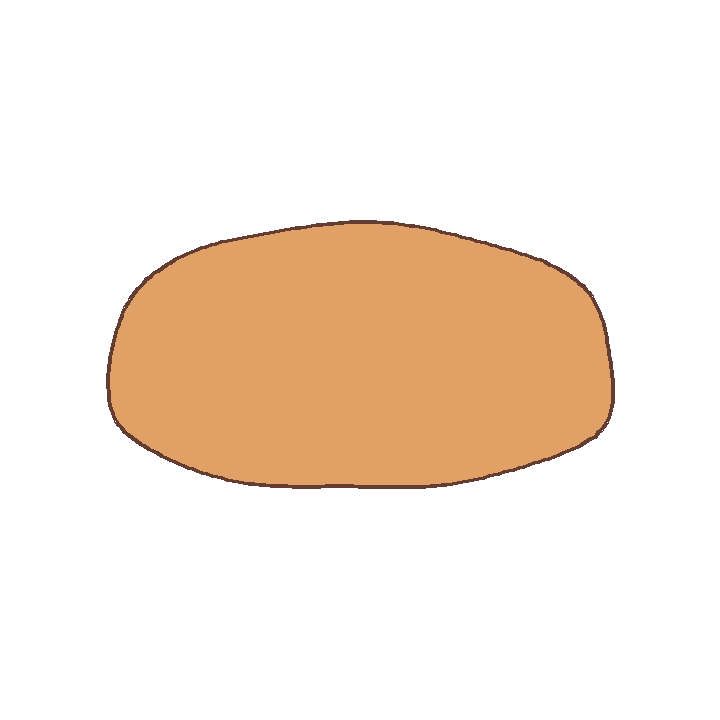
02 · In-betweenNội suy contour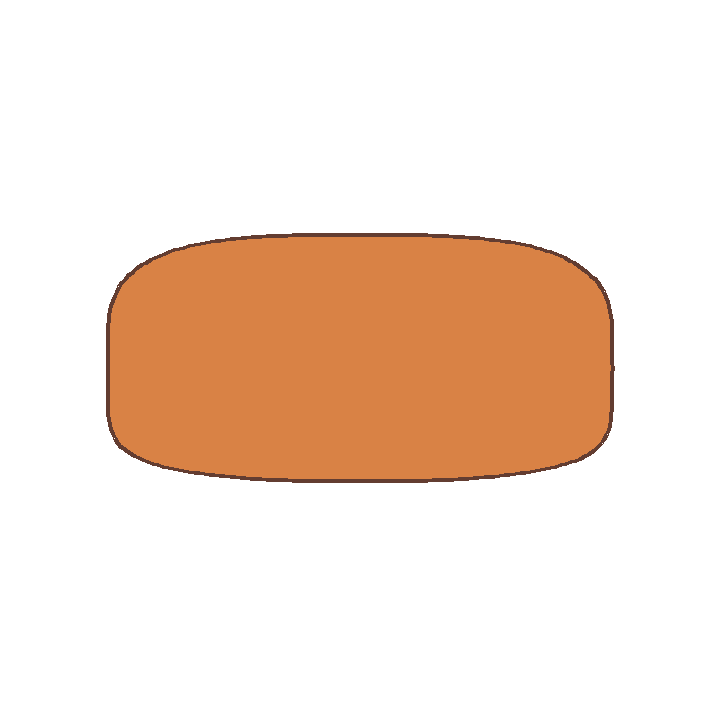
03 · Baked loafKeyframe B · transparentLayer có nghĩa gì ở Morph?
Shape là “shape layer” trong thuật toán, nhưng thư viện không dựng một PSD nhiều layer có thể kéo từng bộ phận. Poster ghép các keyframe, ghost, điểm tương ứng và timeline; GIF là các frame render thật từ cùng contour.
Proofing Loaf
Ổ bánh capsule, thớt bo góc, vụn bột và hạt bột được dựng thành hình học 3D. Ánh sáng mềm, bóng tiếp xúc, phản xạ, haze và DOF được tính trong renderer của repo.
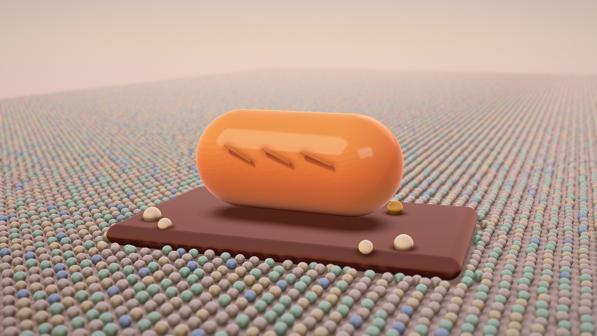
Render stages
Mỗi stage là một lần render toàn cảnh sau khi thêm vật liệu, môi trường và ánh sáng.
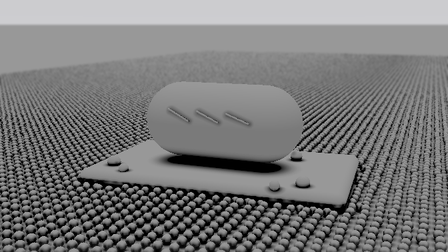
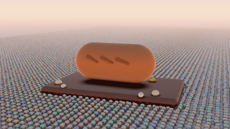
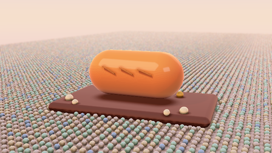

Layer có nghĩa gì ở Soft 3D?
Đây không phải object layers độc lập. Các mesh/procedural solids tồn tại riêng trong scene graph nội bộ; output của repo là ảnh render đã ghép. Stage exports là snapshot tích lũy, không phải RGBA tách từng vật thể.